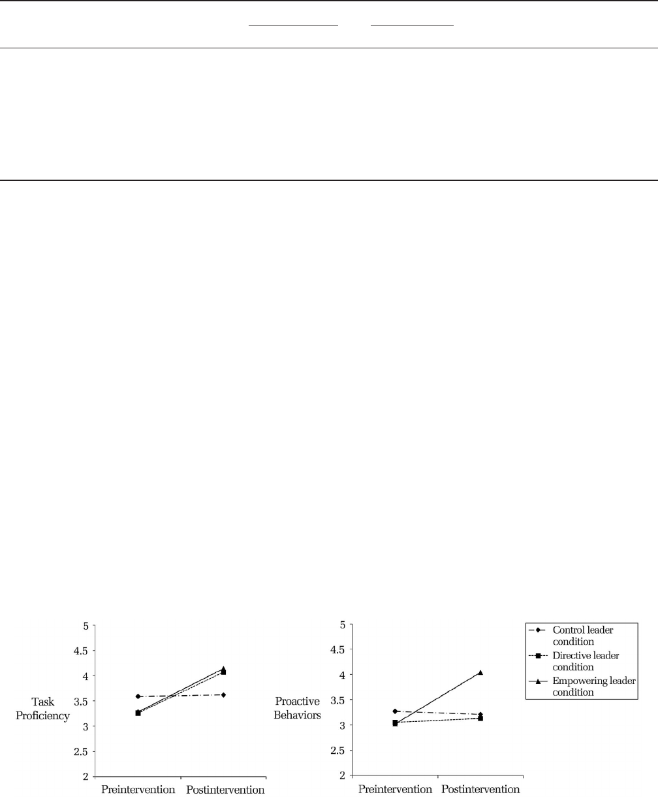
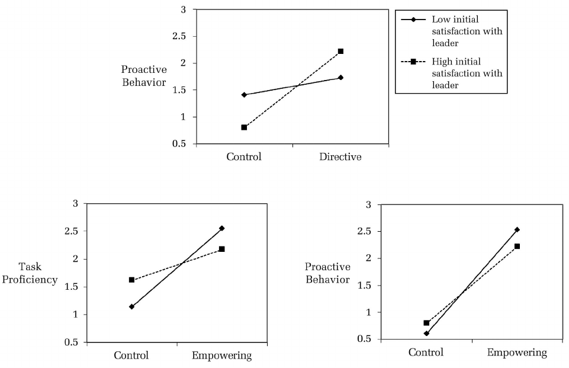
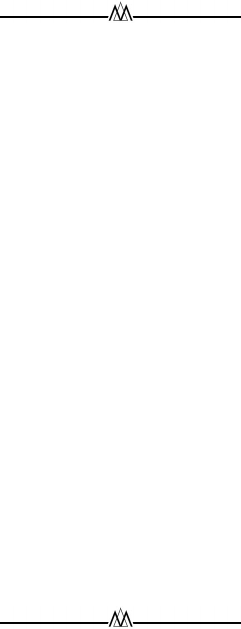

DIRECTIVE VERSUS EMPOWERING LEADERSHIP: A FIELD
EXPERIMENT COMPARING IMPACTS ON TASK PROFICIENCY
AND PROACTIVITY
SCOTT L. MARTIN
Zayed University
HUI LIAO
ELIZABETH M. CAMPBELL
University of Maryland
Using a field experiment in the United Arab Emirates, we compared the impacts of
directive and empowering leadership on customer-rated core task proficiency and
proactive behaviors. Results of tests for main effects demonstrated that both directive
and empowering leadership increased work unit core task proficiency, but only
empowering leadership increased proactive behaviors. Examination of boundary con-
ditions revealed that directive leadership enhanced proactive behaviors for work units
that were highly satisfied with their leaders, whereas empowering leadership had
stronger effects on both core task proficiency and proactive behaviors for work units
that were less satisfied with their leaders. We discuss implications for both theory and
practice.
As modern organizations face more dynamic
conditions, employee responsibilities grow less for-
malized and increasingly difficult to specify (Ilgen
& Hollenbeck, 1991; Sluss, van Dick, & Thompson,
2010). The line between in-role and extra-role per-
formance is more often blurred (Van Dyne & Ellis,
2004). Acknowledging this shift, the domain of be-
haviors that constitute effective performance has
expanded beyond the traditional views, which
were anchored to task proficiency (Griffin, Neal, &
Parker, 2007; Welbourne, Johnson, & Erez, 1998). In
particular, proactive behaviors such as taking
charge, voicing issues, and initiating change have
attracted attention (Frese & Fay, 2001; Morrison,
2011; Morrison & Phelps, 1999; Raub & Liao, 2012),
given the value they often bring to organizations
and work groups (Crant, 2000). Understanding how
to cultivate employees’ proactive contributions—
contributions that go beyond task proficiency but
not to its detriment—is of both practical and theo-
retical importance and will become increasingly
critical as the nature of work grows more uncertain
and dynamic (Grant & Ashford, 2008).
Leadership remains one of the most consequen-
tial contextual influencers of employee perfor-
mance (Chen & Kanfer, 2006; Stogdill, 1974). A
wealth of studies offers insight as to what and how
leadership behaviors impact core task performance.
Recent research has also shown that leaders play
influential roles in impacting employee proactiv-
ity. But as proactive behavior requires different
contextual factors than does core task performance
(Parker, Williams, & Turner, 2006), such as a min-
imum degree of autonomy (Rank, Carsten, Unger, &
Spector, 2007), it is shortsighted to assume that
leader behaviors that influence core task perfor-
mance will have the same effect on proactive per-
formance. Empirical studies have demonstrated
that leaders can both stifle employee proactivity
(Burris, Detert, & Chiaburu, 2008; Grant, Gino, &
Hofmann, 2011) and spark employee proactivity
(Den Hartog & Belschak, 2010; Detert & Burris,
2007; Tangirala & Ramanujam, in press; Williams,
Parker, & Turner, 2010). While research suggests
leaders influence employee proactive behaviors,
little theory building or empirical examination has
focused on specific leader behaviors that foster or
hinder proactivity (Morrison, 2011).
All three authors contributed equally to this article.
This research was supported in part by a grant from the
Research Incentive Fund at Zayed University and a Sum-
mer Research Grant from the Center for Leadership, In-
novation & Change (CLIC) at the University of Maryland’s
Robert H. Smith School of Business. We thank AMJ Ac-
tion Editor Adam Grant and the three anonymous re-
viewers for their insightful comments and suggestions
throughout the review process.
1372
Academy of Management Journal
2013, Vol. 56, No. 5, 1372–1395.
http://dx.doi.org/10.5465/amj.2011.0113
Copyright of the Academy of Management, all rights reserved. Contents may not be copied, emailed, posted to a listserv, or otherwise transmitted without the copyright holder’s express
written permission. Users may print, download, or email articles for individual use only.

To advance both theory and practice, it is crucial
to expand knowledge as to what behaviors leaders
should enact to cultivate both proficiency and pro-
activity among employees. To do so, we examine
how two well-vetted, foundational models of
leader behavior— directive and empowering lead-
ership—influence and comparatively affect this
broadened performance domain. Studies have
linked both leadership styles to group performance
(e.g., Kahai, Sosik, and Avolio [1997] studied direc-
tive leadership, and Srivastava, Bartol, and Locke
[2006], empowering leadership). Yet the two styles
are contrasting in terms of the amount of direction
versus autonomy provided by a leader. Directive
leadership focuses on providing employees with
specific guidance or a clear path to achieving de-
sired outcomes (House, 1971, 1996), whereas em-
powering leadership focuses on granting employ-
ees a fair amount of autonomy so they are able to
make independent decisions regarding how to
achieve desired outcomes (Spreitzer, 1995). Recent
research that jointly examined these distinct styles
demonstrated that they differentially impact task
performance in newly formed teams (Lorinkova,
Pearsall, & Sims, 2013). Therefore, it seems intrigu-
ing to examine these two leadership styles simul-
taneously with regard to a broader performance
domain, inclusive of both core task performance
and proactivity.
Our purpose in this study is twofold. First, we
investigate how directive and empowering leader-
ship behaviors impact customer-rated work unit
proficiency and proactivity. Drawing on goal set-
ting (Locke & Latham, 1990) and empowerment
(Kirkman & Rosen, 1999; Spreitzer, 1995; Thomas &
Velthouse, 1990) theories, we propose that both
directive and empowering leadership will be
equivalent in enhancing core task proficiency, but
only empowering leadership will enhance proac-
tivity. Second, drawing on Barnard’s consent the-
ory of authority (1938), we examine how work unit
members’ satisfaction with their leaders serves as a
boundary condition for the effects of leadership on
unit proficiency and proactivity. In terms of meth-
odology, we rely on a field experiment with organ-
izational leaders. Employing a field experiment en-
ables us to balance experimental control with
generalizability and builds confidence in the causal
nature of relationships between leadership behav-
iors and employee performance (Grant &
Wall, 2009).
Our study makes several theoretical contribu-
tions to the literature on employee performance.
First, we add to the literature on proactive behav-
iors, forging a link between seminal leadership
styles and employee proactivity. In doing so, we
highlight how leadership approaches that promote
proactivity are distinct from those that promote
proficiency. Second, we disentangle distinct per-
formance effects of directive and empowering lead-
ership, stressing the benefit of renewed efforts in
comparing the differential impacts of alternative
leadership styles. Findings enable improved pre-
scription for managers as to which behaviors are
likely to promote specific employee contributions.
Third, we unearth an important boundary condi-
tion for leadership effectiveness, one that may ex-
tend beyond the behavioral approaches examined
in this study. Evidence underscores the importance
of considering followers’ opinions of their leader
when examining the relative effectiveness of alter-
native leadership styles.
DISTINCT FORMS OF LEADERSHIP AND
EXPANDED PERFORMANCE DOMAIN
The purpose of this article is to provide a com-
parison of empowering versus directive leadership
in impacting core task proficiency (i.e., the degree
to which employees meet formal job requirements)
and proactive behaviors (i.e., the extent to which
employees take self-directed action to anticipate or
initiate changes in their environment [Crant, 2000;
Parker et al., 2006]).
1
Both of these performance
criteria are now viewed as important in most or-
ganizational environments (Griffin et al., 2007). We
conceptualize the relationships between the two
leadership approaches and the two criteria at the
work unit level of analysis. In this approach, unit-
level leadership refers to “the overall pattern of
leadership behaviors displayed to the entire busi-
ness unit; it can be viewed as a type of ‘ambient
stimuli’ that pervade the work unit and are shared
1
The Griffin et al. (2007) model also includes adaptiv
-
ity, which refers to coping with and responding to
changes. Adaptivity is positioned as a middle ground
between task proficiency and proactivity, in that it is
enacted under a moderate level of uncertainty and rep-
resents employees’ passive reactions to a changing envi-
ronment. Therefore, adaptability is distinct from yet sim-
ilar to both proactivity and proficiency. Since the goal of
the current study is to contrast the differential effects of
different leadership approaches, we chose to exclude
adaptivity and to focus on the two contrasting perfor-
mance criteria.
2013 1373
Martin, Liao, and Campbell
among the unit members (Hackman, 1992)” (Liao &
Chuang, 2007: 1007). Our unit-level approach is
consistent with the call to go beyond the conven-
tional, dyadic level of analysis in leadership re-
search (e.g., Dansereau & Yammarino, 1998; Podsa-
koff & MacKenzie, 1995) and adds to the growing
line of research taking a generalized approach to
examine effects of leadership on a work unit as a
whole (e.g., Bass, Avolio, Jung, & Berson, 2003;
Grant et al., 2011; Schaubroeck, Lam, & Cha, 2007;
Wang & Howell, 2010).
Directive Leadership
In line with path-goal theory (House, 1971,
1996), we define directive leadership as leader be-
haviors that provide followers with specific guid-
ance regarding goals, means of achieving goals, and
performance standards. Directive leaders also ac-
tively monitor performance and provide appropri-
ate feedback (e.g., rewards and punishments) con-
tingent on employee performance. We view
directive leadership as similar to the classic “initi-
ating structure” paradigm advanced by the Ohio
State studies (e.g., Stogdill, 1950) with the central
distinction being that initiating structure places
more emphasis on punitive behaviors than does
path-goal theory (Schriesheim & Von Glinow,
1977). Relatedly, we distinguish directive leader-
ship from transactional leadership, which focuses
on leader provision of contingent rewards and pun-
ishments, and, unlike path-goal theory, places less
emphasis on providing employees with specific
guidance on how to achieve work goals
(Bass, 1985).
Historically, directive leadership has been con-
strued as the “default” style for improving perfor-
mance on core tasks (Hersey, Blanchard, & Johnson,
1996; Vroom & Jago, 1988). As core tasks are rela-
tively stable or predictable, leaders can effectively
prescribe, in advance, specific goals and directions
for subordinates to follow. Per goal setting theory,
such actions to specify goals improve performance
by effectively directing and increasing effort to-
ward work tasks (Locke & Latham, 1990, 2002). At
the business unit level, directive leaders assign
goals for unit members and provide them with spe-
cific instructions regarding what is expected
(Pearce & Sims, 2002). These specific goals and
instructions clearly direct the unit members’ efforts
toward completion of core tasks. Directive leader-
ship also involves providing regular feedback,
which goal setting research indicates improves per-
formance if performance is below expectations
(Matsui, Okada, & Inoshita, 1983). Therefore, direc-
tive leaders are able to better ensure their units’
performance is on track through constantly moni-
toring it and offering timely direction to poorly
performing unit members to correct problems. Di-
rective leadership also involves rewarding employ-
ees for satisfactorily completing core tasks (House,
1996), which can further enhance a unit’s motiva-
tion to perform such tasks in an effective manner
(Vroom, 1964). Therefore, we expect directive lead-
ership will improve business unit core task
proficiency.
There is little empirical research testing the effect
of directive leadership on unit task proficiency.
Extant research on directive leadership has largely
focused on its effects on employee attitudes and
performance at the individual level of analysis, ex-
amining variables such as an individual’s attitude
toward his/her leader (e.g., Chiaburu, Diaz, & Pitts,
2011) and individual effectiveness (e.g., Somech &
Wenderow, 2006). Research has also linked direc-
tive leadership with other unit-level outcomes,
such as decreased team cohesiveness (e.g., Somech,
2006; Wendt, Euwema, & van Emmerik, 2009), in-
creased efficiency of decision execution (Kahai,
Sosik, & Avolio, 2004), and team effectiveness
(Pearce & Sims, 2002). However, indirect evidence
suggests a link between directive leadership and
unit task proficiency. For example, in a laboratory
experiment, Kahai et al. (1997) found directive
leadership increased group members’ solution-ori-
ented suggestions and enhanced group productiv-
ity within the context of a structured task (i.e.,
similar in nature to formalized role expectations
and core task proficiency requirements). Recently,
a lab study by Lorinkova et al. (2013) offered initial
evidence that directive leadership increases collec-
tive clarity about roles and responsibilities, facili-
tating performance at earlier stages of teamwork.
Meta-analyses by Judge, Piccolo, and Ilies (2004) as
well as by Burke, Stagl, Klein, Goodwin, Salas, and
Halpin (2007) offer further support; both positively
linked leadership behaviors of initiating struc-
ture—akin to but distinct from directive leader-
ship—to group or team productivity. Extending
this literature by offering an explicit test of the
effects of directive leadership on a work unit’s core
task proficiency in a field experiment, we propose:
Hypothesis 1. Directive leadership improves
work unit core task proficiency.
1374 OctoberAcademy of Management Journal
As directive leaders principally influence perfor-
mance by clarifying goals and the specific means of
accomplishing these goals (House, 1971, 1996),
such leader behaviors are likely to undermine em-
ployees’ self-directed actions (Locke & Latham,
1990), which are central to engaging in proactive
behaviors. In keeping with goal setting research, we
expect that when unit employees are assigned goals
and given relatively specific instructions regarding
how to achieve these goals, they will divert atten-
tion away from alternative means of accomplishing
goals (i.e., proactive behaviors). Furthermore, the
active monitoring by more directive leaders is
likely to discourage employees from deviating from
explicitly sanctioned paths toward achieving
end goals.
Even less empirical research has investigated the
impact of directive leadership on proactive behav-
iors. However, research related to creativity sug-
gests that more authoritative or controlling forms of
leadership tend to negatively impact individual
employees’ creativity (e.g., Amabile, Schatzel, Mo-
neta, & Kramer, 2004; Tierney & Farmer, 2002), a
type of performance that also requires employees to
challenge the status quo and has been positioned as
a dimension of proactive behavior (Parker & Col-
lins, 2010). Directive leaders have been shown to
decrease member confidence in work groups (Pe-
terson, 1997), which may inhibit them from being
proactive (Parker, Bindl, & Strauss, 2010). Such
empirical evidence suggests directive leadership
may discourage proactive behavior among individ-
uals within work groups. Given the theoretical ra-
tionale, we extend this literature to the work unit
level of analysis and expect directive leader behav-
iors will negatively impact proactive behaviors
within leaders’ units.
Hypothesis 2. Directive leadership decreases
work unit proactive behaviors.
Empowering Leadership
Following prior work, we define empowering
leadership as the process by which leaders share
power with employees by providing additional re-
sponsibility and decision-making authority over
work and resources as well as the support needed
to handle the additional responsibility effectively
(Ahearne, Mathieu, & Rapp, 2005; Hollander,
2009). Empowering leadership is related to the con-
cept of delegation but differs in that delegation
generally refers to employee ownership of more
specific tasks, whereas empowering leadership im-
plies an ongoing philosophy of sharing broader re-
sponsibilities (Mills & Ungson, 2003). In addition,
delegation tends to focus specifically on the trans-
fer of power, while empowering leadership tends to
encompass a broader range of behaviors, such as
expressing confidence in employees and assisting
in building employee capabilities (Ahearne et al.,
2005; Yukl & Lepsinger, 2004). Empowering lead-
ership also differs from participative leadership in
that the latter involves leaders soliciting employee
input or making decisions jointly with employees;
and such behaviors are generally viewed as only one
aspect of empowering leadership (see Ahearne et al.,
2005; Zhang & Bartol, 2010). We also distinguish em-
powering leadership from transformational leader-
ship, with the latter emphasizing leader charisma,
vision, intellectual stimulation, and individualized
consideration of followers (Bass, 1985). Transforma-
tional leadership may o r may not include empower-
ing behaviors, as charismatic or visionary leaders can
still operate in an autocratic (i.e., not empowering)
manner (Bass, 1997).
Three theoretical perspectives support a positive
relationship between empowering leadership and
employee proactivity within their work units. First,
self-determination theory (SDT; Gagne & Deci,
2005) argues that the need for competence and
autonomy is paramount to the formation of intrin-
sic motivation. Such motivation encourages more
complex, creative, proactive, and self-directed ac-
tivities, as these autonomous behaviors are intrin-
sically satisfying (Gagne & Deci, 2005). A further
SDT proposal is that managers’ interpersonal style
is an ambient social context that facilitates intrinsic
motivation. Empowering leaders delegate authority
to employees, involve employees in decision mak-
ing, share power with employees, encourage self-
management of work, and convey confidence in
employees’ ability to handle challenging work
(Ahearne et al., 2005). We argue that these leader-
ship behaviors can help employees gain a sense of
competence and autonomy, hence enhancing in-
trinsic motivation and subsequently proactive
behavior.
Second, recent theoretical development of proac-
tive work behavior (Parker et al., 2006) proposes
role breadth self-efficacy (i.e., self-perceived capa-
bility to perform a range of proactive, interpersonal,
and integrative activities that extend beyond pre-
scribed tasks) as a key driver of proactive work
performance and as stimulated by work environ-
ment factors such as autonomy and supportive su-
2013 1375
Martin, Liao, and Campbell
pervision. Consequently, empowering leadership,
which offers employees autonomy and support for
pursuing unstructured tasks, should enhance em-
ployees’ role breadth self-efficacy—and subsequent
proactivity.
Both SDT and models of proactive work behavior
have been considered in the context of individual-
level proactivity. Given the focus of the current
study—on the overall proactivity of leaders’ work
units—the third theoretical perspective, namely,
empowerment theory, is most relevant, because ho-
mology (Chen, Bliese, & Mathieu, 2005) of empow-
erment has been demonstrated across individual
and team levels of analysis (Seibert, Wang, &
Courtright, 2011). According to this unified theo-
retical perspective, psychological (or team/collec-
tive) empowerment, including individual (or col-
lective) sense of impact, competence, meaning, and
autonomy (Kirkman & Rosen, 1999; Spreitzer,
1995; Thomas & Velthouse, 1990), enhances intrin-
sic motivation and releases the potential in em-
ployees (or in a unit/team) to take initiative and
make positive changes in their work roles (or
units). Further, empowerment theory identified
supportive leadership as antecedent to psycholog-
ical states of both individual and team empower-
ment (Seibert et al., 2011).
Indirect empirical evidence—at both the individ-
ual and the team level—supports a positive linkage
between empowering leadership and proactivity.
At the individual level of analysis, empowering
leadership has been shown to influence individual
creativity (e.g., Zhang & Bartol, 2010) and innova-
tive behavior (e.g., Chen, Sharma, Edinger, Shapiro,
& Farh, 2011; Seibert et al., 2011) by enhancing an
employee’s sense of psychological empowerment.
In parallel, at the team level of analysis, a team
leader’s efforts to delegate responsibility, solicit—
and use—team input in decision making and to
encourage self-set goals have been shown to en-
hance team empowerment, which further increases
team proactivity (Kirkman & Rosen, 1999). Taking
these findings together, we expect that implement-
ing empowering leadership will increase the over-
all proactive behavior of the leader’s unit. We add
to the limited literature that links empowering
leadership to unit proactivity and provide a direct
test of the causal effect by using a field experiment.
Hypothesis 3. Empowering leadership in-
creases work unit proactive behaviors.
Turning to core task proficiency, when tasks are
rather formalized and predictable, we expect in-
creased collective sense of psychological empow-
erment under empowering leadership to enhance a
unit’s employees’ task effort and persistence,
which in turn improves the quality and quantity of
core task performance (Bandura & Locke, 2003;
Hackman & Oldham, 1976). Meta-analytic research
indicates that supportive leader behaviors are pos-
itively correlated with task performance at both
individual and team levels of analysis through psy-
chological and team empowerment, respectively
(Seibert et al., 2011). In addition, Chen, Kirkman,
Kanfer, Allen, and Rosen (2007) showed that em-
powering leadership climate is positively associ-
ated with team performance partially through team
empowerment. Therefore, we expect implementing
empowering leadership will enhance work unit
task proficiency.
However, we argue that empowering leadership
is unlikely to outperform directive leadership on
core task performance for two reasons. First, self-
determination theory suggests additional auton-
omy granted by an empowering leader holds less
value in connection with routine tasks (Gagne &
Deci, 2005). Such tasks, being fairly structured,
place limits on the extent to which work units can
take advantage of the additional latitude granted by
empowering leaders. As a result, the increases in
intrinsic motivation and performance are likely to
be relatively modest with respect to core tasks.
Second, since role requirements for core tasks are
predictable and can be prescribed beforehand (Grif-
fin et al., 2007), leaders may delineate detailed
procedures on how to carry out core tasks through
directive leadership. Directive leaders focus em-
ployee attention on a proven, well-established path
to performing core tasks, whereas empowering
leadership allows employees to spend more time
exploring how to perform core tasks. Goal setting
research has shown that when an effective path to
goal attainment remains ambiguous, performance
often decreases, as employees are more likely to
make mistakes while searching for effective strate-
gies to achieve goals (Latham & Seijts, 1999). Mills
and Ungson (2003) suggested that empowering
leadership invites a loss of control, reducing effi-
ciency in fulfilling formalized task requirements.
On balance, considering both the advantages (in
terms of increased effort and persistence) and dis-
advantages (in terms of limited increases in intrin-
sic motivation and less guidance from the leader) of
empowering leadership as compared to directive
leadership, we do not expect the positive impact of
empowering leadership on core task proficiency to
1376 OctoberAcademy of Management Journal
be superior to the impact produced by directive
leadership.
Hypothesis 4a. Empowering leadership im-
proves work unit core task proficiency.
Hypothesis 4b. The positive effect of empower-
ing leadership on work unit core task profi-
ciency is equivalent to that of directive
leadership.
Satisfaction with Leader as Moderator
Although leadership style is a strong driver of
work unit performance, employees also play active
roles in shaping work experiences and relation-
ships that influence their work (Wrzesniewski &
Dutton, 2001). Specifically, followers’ attitudes to-
ward their leader affect their receptivity or willing-
ness to accept leader influence (Hollander, 1992,
2009; Smircich & Morgan, 1982). Barnard’s (1938)
early work on consent and authority suggested the
degree of authority leaders have is contingent on
the competencies they demonstrate to subordi-
nates—not merely a product of hierarchical posi-
tion. Employees grant more upward influence to
leaders who behave in ways that are in accord with
their interests and those of their organization. Oth-
erwise stated, leaders have authority only to the
extent that subordinates are willing to accept their
commands, and this “zone of acceptance” is ex-
panded among employees who respect and like
their leaders (Simon, 1947).
Integrating Barnard’s consent theory of leader-
ship (1938) with research on follower attitudes to-
ward leaders, we argue that the effectiveness of
leadership is enhanced when employees are more
satisfied with their leaders. Employee satisfaction
with a leader consists of two underlying compo-
nents: (1) positive affect toward or liking of the
leader, and (2) cognitive assessment of the leader as
capable and competent (Spector, 1985). In terms of
positive affect toward a leader, the notion of “ref-
erent power” (French & Raven, 1959) leads us to
expect well-liked leaders to carry more influence
over followers because followers want to identify
with them and be like them. Empirical research has
demonstrated that when employees like their lead-
ers, they are more inclined to accept or internalize
their leaders’ performance-related values (Tjos-
vold, 1984). In terms of cognitive assessment of a
leader’s capability, the notion of “expert power”
leads us to expect that leaders perceived as more
competent garner more influence over followers
through the leaders’ possessing knowledge, experi-
ence, or judgment critical for task accomplishment
(French & Raven, 1959). Further, when leaders are
perceived as competent, their approaches are more
likely to be viewed as instrumental to achieving
desired goals and resulting rewards and to increase
employee motivation to follow them (House, 1996;
Vroom, 1964). Research has demonstrated that
higher perceptions of leader competence increased
subordinate compliance to leader requests in both
laboratory (Price & Garland, 1981) and field settings
(Sachau, Houlihan, & Gilbertson, 1999).
In the context of this study, we expect when
directive leadership is implemented, employees of
work units experiencing higher levels of leader sat-
isfaction will be more receptive to the specific in-
structions provided by their leaders than work
units experiencing lower levels of satisfaction with
their leaders. More satisfied units will have a
broader zone of acceptance (Simon, 1947) and be
more likely to accept their leaders’ ideas and influ-
ence (Tjosvold, 1984). Therefore, we expect a stron-
ger, positive relationship between directive leader-
ship and core task proficiency when units are more
satisfied with their leader.
Likewise, when empowering leadership is imple-
mented, we propose that work units that are more
satisfied with their leaders will perform more effec-
tively, in terms of both core tasks and proactive
behaviors, than units that are less satisfied with
their leaders. Under empowering leadership, em-
ployees are asked to assume additional responsibil-
ity and risk in making their own decisions. We
argue that work units that are more satisfied with
their leaders are more inclined to embrace the ad-
ditional responsibility and risk and to exert the
additional effort required under empowering lead-
ership, because they believe their leaders are com-
petent and engaging in a leadership approach that
will ultimately prove to be beneficial. Taking these
arguments together, we propose:
Hypothesis 5a. Work unit satisfaction with a
leader moderates the impact of directive lead-
ership on work unit core task proficiency: Di-
rective leadership has a stronger positive effect
on core task proficiency when satisfaction is
higher rather than lower.
Hypothesis 5b. Work unit satisfaction with a
leader moderates the impact of empowering
leadership on work unit core task proficiency:
Empowering leadership has a stronger positive
2013 1377
Martin, Liao, and Campbell
effect on core task proficiency when satisfac-
tion is higher rather than lower.
Hypothesis 5c. Work unit satisfaction with a
leader moderates the impact of empowering
leadership on work unit proactive behaviors:
Empowering leadership has a stronger positive
effect on proactive behaviors when satisfaction
is higher rather than lower.
METHOD
Leader Sample
We conducted our investigation in the United
Arab Emirates (UAE). Our doing so is valuable as
researchers have lamented that very little leader-
ship research has been conducted in the Middle
East (House, Hanges, Javidan, Dorfman, & Gupta,
2004: 64; Kabasakal & Dastmalchian, 2001). We
adopted a relatively broad approach for recruiting
leader participants in an effort to enhance the gen-
eralizability of our study (Highhouse, 2011), tap-
ping three sources: (1) business leaders with previ-
ous consulting or recruiting arrangements with a
large, public UAE university, (2) business leaders
from large UAE organizations, whom we asked to
nominate leaders from their organizations, and (3)
business leaders to whom students referred us, as
perhaps receptive to an invitation to participate in
the study. We inquired about candidate interest in
participating in a leadership study. We positioned
leadership as an important topic for individual and
organizational development and, appealing to na-
tional pride, indicated the study would allow the
UAE to obtain additional recognition in the area of
management research. For inclusion, participants
were required to work in the UAE and to have at
least one formal “direct report.”
We secured commitment from 95 leaders and
randomly assigned leaders (using a random num-
ber table) to one of three experimental conditions:
directive leadership (n ϭ 32), empowering leader-
ship (n ϭ 33), and control (n ϭ 30). Several leaders
withdrew citing time constraints, leaving a final
sample of 86 leaders (28 in directive, 30 in empow-
ering, and 28 in control). Fifty percent of the lead-
ers were women. Average tenure as a leader was
10.5 years, and average role tenure was 3.7 years.
Seventy leaders (81%) were UAE nationals, and 78
(91%) were from the Middle East. Sixty-seven lead-
ers (78%) had earned college or advanced degrees.
There were no significant differences between con-
ditions on any of these demographic variables.
Field Experiment Design
We relied on a pretest-posttest experimental de-
sign with a control group (Campbell & Stanley,
1963). Leaders in the two experimental groups (i.e.,
directive and empowering leadership) were sent a
training guide describing the project. The first au-
thor and at least one research assistant then con-
ducted a one-to-two-hour training session with
each leader. Fifty-four meetings were conducted
face-to-face, and the remaining four via teleconfer-
ence. The goals of the meetings were to (1) describe
desired leader behaviors and potential benefits of
engaging in such behaviors, (2) understand each
leader’s situation and concerns (e.g., number of
employees, performance of employees, current
projects), (3) plan specific behavior changes for the
first two weeks, (4) assess understanding by prob-
ing with a few “what if” questions (e.g., “What if
one of your direct reports asks you why you are
doing this?”).
Leaders participated for ten weeks, during which
they were to spend 15 minutes each day engaging
in the new leader behaviors. We adopted this ap-
proach to have a specific treatment that could be
standardized across the two experimental groups
and all leaders in each group. Our choice of the goal
of 15 minutes per day was based on the practicality
and likelihood of impacting performance. We con-
ducted a three-week pilot study with approxi-
mately 25 other leaders, and this time frame ap-
peared to meet both objectives.
We asked leaders to maintain a daily log. Re-
search assistants contacted each leader biweekly
(i.e., five times during the study) via e-mail to col-
lect daily logs and via telephone to have follow-up
discussions. Occasionally, these meetings were
held face-to-face, particularly if a leader had any
concerns. Biweekly meetings allowed us to contin-
uously motivate and coach the leaders on the de-
sired leadership behaviors.
Directive leadership group. We referred to the
directive leadership condition as “active coaching”
in all materials and discussions with leaders for
two reasons. First, it seemed more descriptive of
the desired behaviors than “directive leadership”
for individuals outside of our discipline. Second,
we were concerned that leaders might view “em-
powering leadership” as significantly more posi-
tive or progressive than “directive leadership,” as
directive leadership can carry negative connota-
tions among leaders (Hersey et al., 1996). We felt
“active coaching” had positive connotations, more
1378 OctoberAcademy of Management Journal
closely paralleling those associated with empower-
ing leadership.
In keeping with research on directive leadership
(House, 1971, 1996), we operationalized active
coaching as having two core components: (1) mon-
itoring or reviewing employee performance and (2)
coaching employees on observed behaviors (e.g.,
providing clear directions, correcting ineffective
performance). We noted that monitoring could be
as simple as observing employees, but it could also
involve actions such as requesting progress reports,
more actively participating in a meeting, or seeking
feedback on employee performance. In terms of
coaching, we asked leaders to recognize effective
performance by identifying the specific positive
behavior and expressing appreciation. For ineffec-
tive performance, we suggested identifying the spe-
cific behavior, indicating why the behavior was
ineffective, and specifying an effective alternative.
We suggested leaders avoid being overly punitive.
Empowering leadership group. In keeping with
the conceptualization of empowering leadership
(Ahearne et al., 2005), we emphasized to the lead-
ers that such leadership requires a genuine sharing
of power, responsibility, and decision-making au-
thority with employees (Forrester, 2000). We clari-
fied that a leader retains ultimate responsibility for
the goals of her/his work unit, but empowering
leadership offers employees additional latitude in
determining how goals are accomplished. We ex-
plained why empowering leadership tends to be
effective (e.g., creates a sense of ownership) and
provided specific examples of how to share power
with employees. We suggested leaders follow four
steps. First, identify a task or project that they are
willing to delegate and that they believe employees
would be able and willing to manage, something
not too demanding or too trivial. We also suggested
that the leaders should feel free to consult with
employees on these decisions. Second, communi-
cate the overall goals and parameters for the task or
project. Third, express confidence in employees’
capabilities. We indicated it was important for em-
ployees to have a sense of self-confidence (Conger,
1989; Conger & Kanungo, 1988). We explained that
accepting additional responsibility may be chal-
lenging for employees and may prompt anxiety
about making mistakes. Fourth, we asked leaders to
commit to building employees’ capabilities and
spend time coaching them on the new responsibil-
ities (Thomas & Velthouse, 1990). As employees
assumed new responsibilities, the leaders were ex-
pected to observe both effective and ineffective per-
formance. We provided these leaders with the same
general coaching guidance we provided to the lead-
ers in the directive group.
Control group. This group was not provided
with any guidance regarding leadership practices.
We asked these leaders to “continue leading your
team as you normally would.”
Measures
To assess the effectiveness of our interventions,
we surveyed all direct reports for each leader and
up to six internal or external customers of each
leader’s unit. Leaders provided employee and cus-
tomer contact information; however, we surveyed
all employees and customers directly, assuring
them responses would be kept confidential. We
obtained a list of customers who had interacted
with the leaders’ units for a period of at least
three months and so had had sufficient opportunity
to observe and evaluate the performance of employ-
ees in the unit. We administered employee and
customer surveys before and after the ten-week in-
tervention. Surveys were available in both English
and Arabic. A professional firm was used to trans-
late the English version into Arabic and to develop
a back-translation (cf. Brislin, 1980). We also asked
two Middle Eastern professors to review all mea-
sures (in both English and Arabic) for cross-cultural
relevance; upon their review, they felt the meaning
of all items would effectively transfer to UAE pro-
fessionals. Respondents were given the option of an
electronic or paper survey.
Of 324 direct reports contacted, we obtained re-
sponses from 282 (87%) at time 1 and 272 (84%) at
time 2, and matched data for 261 (81%) direct
reports, averaging 3.1 matched responses per
leader. Half of the direct reports were UAE nation-
als (49%), and the vast majority were from Middle
Eastern countries such as Iraq, Yemen, and Egypt
(73%). Three direct reports were from Western
countries; results from analyses with and without
these direct reports were essentially the same, so
we retained them in all analyses. Forty-six percent
of direct reports were women, and 57 percent had
university or advanced degrees. There were no sig-
nificant differences between the experimental and
control groups on any demographic variable. Of the
325 customers, we obtained responses from 288
(87%) at time 1 (t1) and 280 (86%) at time 2 (t2),
2013 1379
Martin, Liao, and Campbell

averaging 3.9 matched customer responses per
leader/unit.
2
Employee survey. The employee survey con-
tained manipulation checks for the two experimen-
tal conditions and a measure of initial satisfaction
with supervisor to facilitate our moderator analy-
ses. We used a five-point response scale anchored
by “strongly disagree” and “strongly agree.” A five-
item measure assessed the directive leadership in-
tervention, which was adapted from behaviors
listed as core to directive leadership (Pearce et al.,
2003: 277) and best reflective of key behaviors as-
sociated with our directive leadership intervention.
Sample items include, “My supervisor checks to be
sure employees follow proper procedures” and
“My supervisor clearly explains the way work
should be done.” (t1
␣
ϭ .89; t2
␣
ϭ .75). We used
five items to check the empowering leadership ma-
nipulation (Ahearne et al., 2005; Arnold, Arad,
Rhoades, & Drasgow, 2000), which included items
such as “My supervisor explains the overall goals
we are trying to achieve” and “My supervisor gives
employees the freedom to work on their own.”
These five items reflect both behaviors consistent
with the conceptualization of empowering leader-
ship (Ahearne et al., 2005) and those relevant to our
empowering leadership intervention (t1
␣
ϭ .82
and t2
␣
ϭ .86). Finally, satisfaction with leader
was measured via a four-item scale from Spector
(1985), which includes items such as “My supervi-
sor is quite competent in doing his/her job,” “My
supervisor shows too little interest in the feelings of
subordinates (reverse-scored),” and “I like my su-
pervisor” (t1
␣
ϭ .77; t2
␣
ϭ .74).
Customer survey. The customer survey con-
tained performance measures for core task profi-
ciency and proactivity adopted from Griffin et al.
(2007) and answered on the scale 1, “strongly dis-
agree”; 5, “strongly agree.” We inserted the name of
each leader’s unit at the top of the survey and asked
customers to provide an overall evaluation of the
collective performance of employees within that
unit. The four-item measure of core task profi-
ciency includes items such as “carry out core parts
of the job well” and “make sure tasks are completed
properly” (t1
␣
ϭ .87; t2
␣
ϭ .80). The four-item
measure of proactivity included items such as “ini-
tiate better ways of doing core tasks” and “improve
the way the work unit does things” (t1
␣
ϭ .85; t2
␣
ϭ .88).
RESULTS
Manipulation Checks
We checked manipulation by condition using re-
peated-measures analysis of variance (ANOVA).
Results yielded significant time by condition inter-
actions for directive leadership (F[2, 83] ϭ 7.05, p
ϭ .002,
2
ϭ .15, d ϭ .92) and empowering leader
-
ship (F[2,83] ϭ 22.85, p Ͻ .001,
2
ϭ .36, d ϭ 1.00).
Because empowering and directive leadership
shared variance, we tested our manipulation for
each leadership style while controlling for the
other to isolate the unique effects of each manipu-
lation. Directive behaviors increased significantly
for the directive leadership group (t[25] ϭ 6.46, p Ͻ
.05) but did not for the control group (t[25] ϭ 1.10,
n.s.) or the empowering group (t[27] ϭ 0.93, n.s.).
Empowering behaviors increased for the leaders in
the empowering condition (t[27] ϭ 4.28, p Ͻ .05)
but not for those in the directive condition (t[25] ϭ
.03, n.s.) and the control condition (t[25] ϭ .13,
n.s.). We also tested each manipulation without
controlling for the other, which yielded a similar
pattern of results. Taken together, these results in-
dicate leaders altered their behaviors in accordance
with our interventions.
Confirming Factor Structure
Prior to testing our hypotheses, we conducted
two sets of confirmatory factor analyses (CFAs) us-
ing LISREL (Jöreskog & Sörbom, 1993) to examine
the factor structure of our measures on customer
and employee surveys. Table 1 summarizes these
results. With respect to the customer survey, which
included measures of core task proficiency and
proactivity, results demonstrated the two-factor
model fit the data significantly better than the con-
strained model at time 1 and time 2, supporting our
measurement model and reinforcing the appropri-
ateness of bifurcating task proficiency and proac-
tive behaviors as proposed by Griffin et al. (2007).
With respect to the employee survey, analyses in-
2
To check for nonresponse bias, we compared early
responders to late responders on key variables (Rogelberg
& Stanton, 2007). An absence of significant differences,
except an understandably negative relationship between
early responding employees and customer ratings of pro-
active performance, suggested minimal response bias.
We also included percentage of employee online re-
sponse and percentage of customer online response as
control variables in our hypothesis testing to account for
any potential effects associated with modes of response.
1380 OctoberAcademy of Management Journal
dicated a three-factor model, treating directive
leadership, empowering leadership, and satisfac-
tion with leader measures as distinct, fit the data
reasonably well, and far better than the constrained
one-factor model and all other two-factor models,
including those in which directive and empower-
ing leadership were constrained to the same factor.
Justification for Aggregation
Since both employees and customers were
nested within leaders/units, we analyzed all key
variables (i.e., core task proficiency, proactive be-
haviors, the two manipulation checks, and satisfac-
tion with leader) at the unit level of analysis. To
justify aggregation, we calculated within-unit
agreement values (r
wg(i)
) and intraclass correlation
coefficients (ICCs) at times 1 and 2. We examined
agreement against the uniform null distribution
and found values ranging from .85 to .93, indicating
strong agreement (LeBreton & Senter, 2008). ICC1
values ranged from .33 to .63 (median ϭ .53), and
ICC2 ranged from .60 to .87 (median ϭ .78). Table 2
displays aggregation statistics, which offer strong
support for aggregation.
Main Effects on Performance Outcomes
Next, we examined the effects of the leadership
interventions on unit core task proficiency and pro-
active behaviors. Table 3 displays descriptive sta-
tistics, internal consistency reliabilities, and corre-
lations among all focal variables. Table 4 presents
pre- and postintervention means by condition, and
Figure 1 summarizes the main effects.
In advance of examining univariate effects, we
used multivariate analysis of covariance
(MANCOVA) to compare the impact of the three
experimental groups on the postintervention re-
sults for both performance criteria, following the
approach of others (e.g., Frayne & Geringer, 2000;
Peterson & Luthans, 2006). The MANCOVA results
indicated a significant effect of condition on
postintervention performance when preinterven-
tion ratings of performance were controlled for
(Wilks
ϭ .45, F[4, 148] ϭ 18.45, p Ͻ .001). These
findings suggested it was appropriate to examine
univariate effects via ANOVA.
It should be noted that the preintervention per-
formance of the control group was higher than that
of either experimental group despite random as-
signment. To minimize factors that could poten-
tially bias effects, we controlled for the following in
TABLE 1
Confirmatory Factor Analyses
Model
Customer Measures Employee Measures
2
df SRMR CFI ⌬
2
2
df SRMR CFI ⌬
2a
⌬
2b
1a. One-factor, t1 370.74 20 .10 .84 423.84 77 .07 .93
1b. One-factor, t2 264.30 20 .11 .87 559.14 77 .11 .84
2a. Two-factor, t1
c
112.07 19 .06 .94 258.67** 404.52 75 .07 .94
2b. Two-factor, t2
c
91.99 19 .05 .96 172.31** 475.71 75 .10 .87
3a. Three-factor, t1 287.58 74 .06 .95 136.26** 116.94**
3b. Three-factor, t2 333.99 74 .09 .91 225.15** 141.72**
a
Comparisons from one-factor model.
b
Comparisons from two-factor model.
c
The two factors for employee measures are (1) leadership, directive/empowering; and (2) satisfaction with leader.
** p Ͻ .01
TABLE 2
Tests for Aggregation of Employee and Customer
Responses to the Unit Level
Variable
r
wg(i)
Uniform
One-Way
ANOVA ICC1 ICC2
Manipulation checks
Directive leadership, t1 .90 7.94*** .59 .87
Empowering leadership, t1 .86 3.73*** .47 .73
Directive leadership, t2 .92 4.18*** .40 .68
Empowering leadership, t2 .88 3.10*** .50
.76
Moderator
Satisfaction with leader, t1 .85 4.72*** .54 .79
Satisfaction with leader, t2 .87 2.53*** .33
.60
Performance measures
Task proficiency, t1 .88 6.38*** .63 .84
Proactive behaviors, t1 .87 4.40*** .52 .77
Task proficiency, t2 .93 5.62*** .60 .82
Proactive behaviors, t2 .92 5.84*** .61 .83
*** p Յ .001
2013 1381
Martin, Liao, and Campbell
TABLE 3
Descriptive Statistics and Correlations
a
Variable Mean s.d. 1 2 3 4 5 6 7 8 9 10 11 12 13 14 15 16
1. Leader gender
b
0.50 0.50
2. Leader tenure 3.70 2.17 .26*
3. Leader nationality
c
0.81 0.39 Ϫ.18 Ϫ.20
4. Direct recruitment
source
0.63 0.49 Ϫ.19 .27* Ϫ.18
5. Employee online
response
0.81 0.76 Ϫ.08 .08 .00 Ϫ.17
6. Customer online
response
0.76 0.76 Ϫ.10 Ϫ.06 .06 Ϫ.17 .52**
7. Directive leadership, t1 3.58 0.77 .01 .12 Ϫ.16 .04 Ϫ.14 Ϫ.12 (.89)
8. Directive leadership, t2 3.93 0.42 .04 .14 Ϫ.02 .21 Ϫ.10 .02 .25* (.75)
9. Empowering
leadership, t1
3.24 0.60 .08 Ϫ.02 Ϫ.09 .01 .02 .05 .72** .33** (.82)
10. Empowering
leadership, t2
3.48 0.65 .04 Ϫ.01 .01 .13 .12 .13 .26* .42** .59** (.86)
11. Satisfaction with
leader, t1
3.42 0.66 Ϫ.02 Ϫ.04 Ϫ.10 .03 Ϫ.15 Ϫ.15 .80** .15 .65** .26* (.77)
12. Satisfaction with
leader, t2
3.78 0.48 Ϫ.01 Ϫ.10 .09 .05 .03 Ϫ.04 .28** .35** .27* .44** .54** (.74)
13. Task proficiency, t1 3.38 0.72 Ϫ.09 Ϫ.02 Ϫ.12 .06 Ϫ.06 Ϫ.13 .62** .01 .38** Ϫ.06 .59** .15 (.87)
14. Task proficiency, t2 3.95 0.56 Ϫ.13 Ϫ.09 .01 .21 .05 Ϫ.02 .11 .39** .11 .27* .13 .33** .42** (.80)
15. Proactive behaviors, t1 3.11 0.66 Ϫ.05 .12 Ϫ.05 .18 Ϫ.02 Ϫ.14 .37** .15 .36** .05 .33** .07 .64** .39** (.85)
16. Proactive behaviors, t2 3.48 0.68 Ϫ.06 Ϫ.11 .11 .16 .07 Ϫ.10 .23* .29** .29** .53** .30** .37** .33** .63** .37** (.88)
a
Internal consistency reliability (alphas) are on the diagonal in parentheses. n ϭ 86 work units (n ϭ 28 leaders/units for directive; and control condition analysis, respectively;
n ϭ 30 for empowering condition analysis).
b
“Male” ϭ 0, “female” ϭ 1.
c
“Non-UAE” ϭ 0, “UAE” ϭ 1.
* p Յ .05
** p Յ .01
*** p Յ .001

testing all hypotheses: recruitment method (i.e., di-
rect or indirect referral), employee and customer
response methods (i.e., online or hard-copy survey
administration), leader gender, leader tenure, and
leader ethnicity. We employed repeated-measures
ANOVA to account for differences in baseline per-
formance differences and assess changes in perfor-
mance over time. The data met the sphericity as-
sumption (i.e., equality of variances of between-
level differences) necessary for within-group
analysis of variance. Findings indicated a signifi-
cant condition by time interaction on core task
proficiency (F[2, 75) ϭ 13.12, p Ͻ .001,
2
ϭ .26, d
ϭ .99) and proactive behaviors (F[2, 75] ϭ 29.60, p
Ͻ .001,
2
ϭ .44, d ϭ 1.00).
Hypothesis 1 proposes directive leadership in-
creases unit core task proficiency more than lead-
ership as practiced in the control group. Findings
from repeated-measures ANOVA indicated a signif-
icant effect of the time by condition interaction on
core task proficiency (F[1,46] ϭ 30.18, p Ͻ .001).
Supporting Hypothesis 1, matched-samples t-tests
demonstrated unit core task proficiency improved
in the directive leadership group (t[27] ϭ 7.27, p Ͻ
.001, mean increase ϭ 0.81), but not in the control
group (t[27] ϭ 0.76, n.s., mean increase ϭ 0.04).
Hypothesis 2 proposes that directive leadership re-
duces unit proactive behaviors. A matched-sam-
ples t-test showed that proactive behaviors did not
decrease or increase under directive leadership
TABLE 4
Pre- and Postintervention Means by Condition and Paired-Sample Test of Intervention Effects
a
Variable
Experimental
Condition
Preintervention Postintervention
Post-/Pre-
Difference df tMean s.d. Mean s.d.
Satisfaction with leader Control 3.58 0.50 3.64 0.46 .06 27 1.05
Directive 3.15 0.73 3.71 0.52 .56 27 5.71***
Empowering 3.52 0.68 3.98 0.39 .46 29 3.66**
Task proficiency Control 3.59 0.58 3.63 0.61 .04 27 0.76
Directive 3.26 0.78 4.07 0.59 .81 27 7.27***
Empowering 3.28 0.76 4.14 0.30 .86 29 5.80***
Proactivity Control 3.27 0.65 3.21 0.56 Ϫ.06 27 0.87
Directive 3.05 0.65 3.14 0.68 .09 27 0.72
Empowering 3.03 0.67 4.05 0.32 1.02 29 9.32***
a
Control, n ϭ 28 leaders/units; directive, n ϭ 28 leaders/units; and empowering, n ϭ 30 leaders/units. Tukey post hoc comparisons
revealed that posttest task proficiency was significantly higher under both the directive and empowering conditions than under the control
condition (p Ͻ .01, both comparisons), though there was not a significant difference between the experimental conditions (p ϭ .86).
Posttest proactivity was not significantly different between the control and directive conditions (p ϭ .85), but it was significantly higher
for the empowering than for the control and directive conditions (p Ͻ .001, both comparisons).
** p Յ .01
*** p Յ .001
FIGURE 1
Pre- and Postintervention Performance Outcomes by Condition
2013 1383
Martin, Liao, and Campbell
(t[27] ϭ 0.72, n.s., mean increase ϭ 0.09). There-
fore, Hypothesis 2 was not supported.
Hypothesis 3 predicts that empowering leader-
ship increases unit proactive behaviors more than
leadership as practiced in the control group. Re-
sults from repeated-measures ANOVA indicated a
significant effect of the time by condition interac-
tion on proactive behaviors (F[1, 48] ϭ 46.64, p Ͻ
.001). Providing clear support for Hypothesis 3,
unit proactive behavior increased significantly in
the empowering leadership group (increase ϭ 1.02,
t[29] ϭ 9.32, p Ͻ .001) but not in the control group
(t[27] ϭ 0.87, n.s., mean decrease ϭ 0.06).
Hypothesis 4a proposes empowering leadership
improves unit core task proficiency more than lead-
ership as practiced in the control group, while Hy-
pothesis 4b predicts that this improvement will be
equivalent to that observed under directive leader-
ship. Supporting Hypothesis 4a, results indicated
unit core task proficiency improved in the empow-
ering leadership condition (t[29] ϭ 5.81, p Ͻ .001),
mean increase ϭ 0.86) but not in the control con-
dition (reported above). Results also offered sup-
port for Hypothesis 4b, with a time by condition
repeated-measures comparison of directive and
empowering leadership indicating no significant
difference on core task proficiency between the
groups (F[1, 48] ϭ 0.01, n.s.,
2
ϭ .00, d ϭ .05).
Moderating Effect of Initial
Satisfaction with Leader
To test Hypotheses 5a, 5b, and 5c, we conducted
moderated ordinary least squares (OLS) regression
analyses, following steps recommended by Cohen,
Cohen, West, and Aiken (2003). Hypothesis 5a pre-
dicts higher satisfaction with a leader strengthens
the positive effect of directive leadership on unit
core task proficiency. Hypotheses 5b and 5c predict
higher satisfaction with a leader strengthens the
positive effects of empowering leadership on unit
task proficiency and proactive behaviors, respec-
tively. Prior to analysis, we grand-mean-centered
time 1 satisfaction with leader and computed prod-
uct terms for the centered moderator with each
leadership condition. We then examined multivar-
iate effects, controlling for time 1 task proficiency
or proactive behaviors, recruitment source, em-
ployee and customer response method, leader gen-
der, leader tenure, leader ethnicity, and the previ-
ously discussed main effects.
Results, presented in Table 5, failed to support
TABLE 5
Test of Moderator Hypotheses
a
Variables
b
Task Proficiency Proactive Performance
Model 1 Model 2 Model 3 Model 4
Main effects
Leader gender Ϫ.12 Ϫ.13 Ϫ.11 Ϫ.14*
Leader tenure .08 .07 .06 .07
Recruitment method .20* .12 .11 Ϫ.02
Proportion employee online response .03 Ϫ.01 .11 .08
Proportion customer online response Ϫ.04 Ϫ.02 Ϫ.17* Ϫ.18*
Nationality .03 .01 .05 .02
Directive leader condition .46*** .51*** .05 .12
Empowering leader condition .58*** .64*** .68*** .72***
Initial satisfaction with leader Ϫ.16 .10 .10 .00
Preintervention performance ratings .60*** .66*** .40*** .49***
Moderation effects
Directive leader ϫ initial satisfaction with leader Ϫ.12 .28*
Empowering leader ϫ initial satisfaction with leader Ϫ.35** Ϫ.19*
R
2
.50 .54 .65 .73
⌬F 7.52*** 3.32* 13.83*** 11.61***
a
Values are standardized regression coefficients. n ϭ 86.
b
Gender: “male” ϭ 0, “female” ϭ 1. Recruitment method: “indirect” ϭ 0, “direct” ϭ 1. Nationality: “non-UAE” ϭ 0, “UAE” ϭ 1.
* p Ͻ .05
** p Ͻ .01
*** p Ͻ .001
One-tailed tests.
1384 OctoberAcademy of Management Journal

Hypothesis 5a, as there was no significant interac-
tion between directive leadership and initial satis-
faction with leader in predicting task proficiency.
However, post hoc analyses revealed that satisfac-
tion with leader did positively moderate the effect
of directive leadership on unit proactive behaviors
(

ϭ .28, p Ͻ .05). Tests of simple slopes indicated
that directive leadership predicted proactivity
when initial satisfaction with leader was high (r ϭ
.70, p Ͻ .01) but not when it was low (r ϭ .16, n.s.).
To aid in the interpretation of results, we followed
procedures recommended by Aiken and West
(1991), plotting the significant interactions at one
standard deviation above and below their means
for initial satisfaction with leader. This graph is
displayed in Figure 2.
The results did not support Hypotheses 5b and
5c and, interestingly, were opposite to our predic-
tions. A significant negative interaction between
satisfaction with leader and empowering leader-
ship is observed in which empowering leadership
has a stronger effect on unit task proficiency (

ϭ
Ϫ.35, p Ͻ .01) and proactive behaviors (

ϭϪ.19,
p Ͻ .05) when initial satisfaction with leader is
lower rather than higher. Tests of simple slopes
revealed empowering leadership increased task
proficiency when initial satisfaction with leader
was low (r ϭ .70, p Ͻ .01) but not when it was high
(r ϭ .28, n.s.). For proactive behaviors, simple
slopes tests revealed empowering leadership
prompts significantly higher proactive perfor-
mance both when initial satisfaction with leader is
low (r ϭ .97, p Ͻ .01) and when it is high (r ϭ .72,
p Ͻ .01), but to significantly different magnitudes.
DISCUSSION
Traditional views of employee performance have
emphasized core task proficiency. However, in an
increasingly dynamic and uncertain economy, pro-
activity has become another important aspect of
performance (Griffin et al., 2007). Our central ob-
jective was to examine how and when different
forms of leadership are relevant to core task profi-
FIGURE 2
Moderating Effect of Initial Satisfaction with Leader
2013 1385
Martin, Liao, and Campbell
ciency and proactivity. In a field experiment over a
ten-week period in the UAE, our main effect results
demonstrated that both directive and empowering
leadership improved work unit core task profi-
ciency, but only empowering leadership improved
work unit proactive behaviors. Findings also indi-
cated that directive leadership improved proactive
behaviors for units that were highly satisfied with
their leaders, whereas empowering leadership was
more effective in improving task proficiency and
proactivity for units that were less satisfied with
their leaders. The use of a field experiment allows
us to conclude with a fair degree of confidence that
our interventions actually caused these improve-
ments in work unit performance (Campbell & Stan-
ley, 1963).
Theoretical Implications
Our results advance the performance and leader-
ship literatures in several ways. First, we directly
link the literature on proactivity and empowering
leadership, responding to calls for the need to iden-
tify additional antecedents to proactive behavior
beyond autonomy, job complexity, and account-
ability (Grant & Parker, 2009). Findings underscore
the critical role leaders can play in encouraging
proactivity. This perspective balances that of early
work on proactive behavior, which attributed it
largely to stable individual characteristics (Bate-
man & Crant, 1993). Our study identifies empow-
ering leadership style as a contextual, malleable
influencer of proactive performance. Empowering
leadership catalyzed customer-rated work unit pro-
activity, while directive leadership did not.
This finding suggests that leaders cannot simply
dictate the need for proactive performance, but
rather need to inspire and intrinsically motivate it.
As proactive behaviors directly alter an environ-
ment (Bateman & Crant, 1993: 104), there is often
inherent risk for employees who enact such behav-
iors. Empowering, rather than directive, leaders
serve to disambiguate how proactivity will be re-
ceived. Empowering leaders’ emphasis on partici-
pation and expression of confidence in staff may
reduce the potential costs of being proactive. This
reduction in risk might be all that is needed to tip
the mental cost-benefit equation of employees
when they are deciding whether to take charge or
challenge the status quo (Morrison & Phelps, 1999).
Our study also responds to the call to understand
the time lags needed to influence proactive behav-
iors (Clegg & Spencer, 2007; Frese & Fay, 2001;
Grant & Parker, 2009: 355). Frese and Fay (2001)
suggested it may take from one to ten years to
match proactive employees with jobs that require
significant amounts of personal initiative. Our field
experiment indicates a concerted, developmental
leadership intervention can have a noticeable im-
pact on employee proactivity within a few months.
This time frame suggests employees need relatively
modest amounts of leader and organizational sup-
port to fuel self-directed actions.
Second, our study compared performance effects
of two forms of leadership. At best, the current
literature on empowering leadership has been
largely silent regarding this comparison. Given the
current lack of attention to directive leadership,
and the significant body of research highlighting
the positive impact of empowering leadership on
core tasks (e.g., Chen & Aryee, 2007; Huang, Iun,
Liu, & Gong, 2010; Raub & Robert, 2010), one might
conclude that empowering leadership is more ef-
fective than directive leadership in improving work
unit core task proficiency. In contrast to pervading
assumptions, empowering leadership was not more
effective than directive leadership in impacting
core task proficiency. Drawing from von Berta-
lanffy’s (1972) foundational work on general sys-
tems theory, our results suggest that directive and
empowering leadership may be “equifinal” in im-
proving work unit core task proficiency. That is,
the two leadership styles may achieve the same
end, at least with respect to core tasks, but the
mechanisms or paths may be quite different. Direc-
tive leadership is likely to operate on the basis of
principles put forth in goal setting theory (Locke &
Latham, 1990) and path-goal theory (House, 1996),
which highlight the importance of behaviors such
as specifying goals for staff, monitoring perfor-
mance, and providing regular feedback. Con-
versely, empowering leadership is likely to operate
via increasing staff’s sense of autonomy and re-
sponsibility, which improves unit performance via
increased collective psychological empowerment
(Seibert et al., 2011).
Third, our study contributes to the leadership
literature by challenging the top-down approach of
examining a leader’s effectiveness without consid-
ering followers’ attitudes toward the leader. Extant
research on empowering and directive leadership
has often assumed work units with different atti-
tudes toward their leader will react similarly to a
given intervention. In contrast, our findings high-
light the importance of adapting leadership behav-
ior in view of followers’ perceptions of a leader.
1386 OctoberAcademy of Management Journal
Contrary to our hypotheses, we found that work
units that were less satisfied with their leaders
prior to the implementation of empowering leader-
ship experienced greater improvement in both core
task proficiency and proactivity than work units
that were more satisfied with their leaders. In ret-
rospect, this finding may be informed by several
perspectives. First, from an affective standpoint,
employees who are less satisfied with their leaders
are more likely to prefer the autonomy associated
with empowering leadership because it affords
them additional distance from a relatively aversive
stimulus—compared with their more satisfied
counterparts. Further, the positive affect derived
from this additional autonomy is likely to be dis-
played to others, including customers, in the form
of positive attitudes and supportive behaviors (Bar-
sade, 2002; Bateman & Organ, 1983; Clark & Isen,
1982; Motowidlo, 1984) and is likely to impact
work unit performance (Cole, Walter, & Bruch,
2008). Second, from a cognitive standpoint, work
units that are less satisfied with their leaders are
less likely to identify with their values (Tjosvold,
1984) or view them as competent (Spector, 1985).
As a result, unit members are more likely to em-
brace the idea of making their own decisions. This
is consistent with findings of Zhou and George
(2001) indicating that job dissatisfaction, or discon-
tent with the status quo, leads to increases in em-
ployee creativity when coupled with organization-
al support. As empowering leaders explicitly
encourage employees to pursue their own ideas,
work units most dissatisfied with the status quo are
more likely to embrace this opportunity.
We also found directive leadership enhanced
proactive behaviors when employees were highly
satisfied with their leader. We offer four plausible
explanations for this unexpected finding. First, so-
cial exchange theory (Blau, 1964) implies that
when employees are satisfied with their leaders,
they may be more likely to appreciate directive
leadership as providing helpful guidance, which
will increase their desire to reciprocate by taking
proactive actions. However, when employees
are not satisfied with their leaders, they are likely
to interpret directive leadership as a hindrance to
their autonomy, reciprocating by avoiding acts of
proactivity. Therefore, satisfaction with a leader
may shape how social exchange unfolds, altering
how employees interpret and respond to directive
leadership. Second, cognitive evaluation theory
(Deci & Ryan, 1985) suggests directive leadership
involves both control and information components;
thus, if control is not particularly salient (as indi-
cated by a high level of satisfaction with leader),
the information component may become dominant
and provide a host of benefits. Directive leaders are
likely to reduce role ambiguity and the stress typi-
cally associated with uncertainty (House, 1996),
increasing employee confidence and self-efficacy,
which encourage proactive behaviors (Parker et al.,
2010). Third, higher levels of satisfaction with a
leader are more likely to be associated with higher
trust and psychological safety (Dirks & Ferrin,
2002; Podsakoff, MacKenzie, Moorman, & Fetter,
1990), which may create environments in which
employees are willing to be proactive and chal-
lenge the status quo—even in the context of direc-
tive leadership.
3
Fourth, directive leadership,
when combined with positive leader-employee re-
lations, may resemble a “paternalistic” or “nur-
turant-task” leadership style, which often exists in
traditional cultures such as India (Sinha, 1984) and
Arab countries (Muna, 1980). Under this leadership
style, employees readily accept leader authority,
and leaders are warm and caring toward employees
and dedicated to their growth. Showing dynamics
typically associated with parenting, leadership as-
sumes a more directive form, but all parties expect
the employee to grow and obtain additional auton-
omy over time. Future research may examine how
the holistic caring associated with paternalistic
leadership can help directive leaders create envi-
ronments in which employees feel comfortable
enacting proactive behaviors (see Pellegrini & Scan-
dura, 2008; Pellegrini, Scandura, & Jaya-
raman, 2010).
Another contribution of the current study is that
our findings offer compelling evidence that em-
powering leadership can improve performance in a
“high-power-distance” culture. Cross-cultural re-
search on cultural values suggests that in such a
culture, the less powerful members of society tend
to accept that power is distributed unequally (Hof-
stede, 2001), and members in positions of authority
generally expect obedience (Javidan, Dorfman, de
Luque, & House, 2006) and are reluctant to share
power with subordinates (Aycan et al., 2000). Since
empowering leadership is counter to the typical
cultural practice in high-power-distance cultures,
Spreitzer (2007) questioned whether it would be
effective in them. There has been limited research
3
We thank our action editor and an anonymous re
-
viewer for this helpful suggestion.
2013 1387
Martin, Liao, and Campbell
examining empowering leadership in high-power-
distance cultures. Some research, including studies
set in Brazil (Randolph & Sashkin, 2002), China
(Chen & Aryee, 2007; Gamble, 2006; Zhang & Bar-
tol, 2010), and Mexico (Robert, Probst, Martocchio,
Drasgow, & Lawler, 2000), suggests that empower-
ing leadership will be effective in these cultures,
whereas other research suggests empowering lead-
ership will not be effective in high-power-distance
cultures such as India (Robert et al., 2000). A lim-
itation of these prior studies is that they are virtu-
ally all case- or survey-based research. Therefore, it
is difficult to draw causal inferences from this body
of work. Using a field experiment, our study dem-
onstrates the beneficial effects of empowering lead-
ership on work unit task performance and innova-
tive behavior in a high-power-distance culture. Our
findings suggest that although empowerment is not
typically expected by followers, nor is it typically
granted by leaders in such a culture (Hofstede,
2001; Javidan et al., 2006), when empowering lead-
ership is actually implemented, employees appear
to embrace the opportunity.
Practical Implications
From a practical standpoint, our results are en-
couraging regarding the ability of leadership inter-
ventions to have a positive impact on the perfor-
mance of work units. Our interventions did involve
a fairly significant amount of leader coaching (e.g.,
customizing the initial training to each leader’s sit-
uation, using daily logs, biweekly coaching), but
we were able to influence performance within a
few months.
The directive and empowering leadership inter-
ventions were essentially equivalent in impacting
core task performance. Directive leadership may
have negative connotations among leaders (Hersey
et al., 1996), perhaps because it is viewed as tradi-
tional or as limiting human choice, but our findings
suggest that directive behaviors should remain an
important aspect of a leader’s repertoire. While
leader behaviors such as close monitoring of em-
ployees and providing specific goals have a ten-
dency to be undervalued (Latham, Erez, & Locke,
1988: 770), they remain critical to driving the per-
formance of work units. In addition, we found it
more taxing to implement the empowering leader-
ship intervention. For instance, we received more
questions and more complicated questions from
leaders in the empowering leadership group than
from those in the directive group. As a result, di-
rective leadership may be more attractive than em-
powering leadership from a cost-benefit stand-
point, especially if tasks can be formalized and
standardized.
Our research indicates that when leaders wish to
enhance proactive behaviors, empowering leader-
ship is generally superior to directive leadership.
Our methodology related to empowering leader-
ship involved a delicate balance between providing
work units with autonomy or support. On the one
hand, we emphasized to leaders that they must
delegate meaningful aspects of work to their em-
ployees. On the other hand, we also emphasized
that managers had to encourage their employees
and be readily available to support them, at least
during the initial phases of the intervention. In
practice, leaders are likely to need a fair amount of
organizational support to help them achieve this
balance.
Illustrating a more complete picture, our moder-
ator analyses suggest that leaders should monitor
how their employees perceive them. When employ-
ees are highly satisfied with their leader, they may
engage in proactive behaviors even under a more
directive leadership style. This further bolsters our
arguments above supporting the value of directive
leadership. Alternatively, a case in which employ-
ees appear less satisfied with a leader may offer an
appropriate opportunity to implement empowering
leadership, particularly if there is a need to im-
prove both core task performance and proactivity,
as under such conditions employees are more in-
clined to embrace the opportunity to work more
independently.
Limitations and Future Research
We acknowledge several limitations to this study
and suggest related opportunities for future re-
search. First, our sampling strategy was broad, as
leaders were recruited through a variety of sources,
and they represented a variety of industries and
occupations. This minimized the likelihood our
results are a function of a specific industry or oc-
cupation; therefore, our sample offers a high degree
of generalizability. However, extraneous factors
could be influencing our results. We did, however,
control for a variety of leader demographic charac-
teristics as well as recruitment source in our anal-
yses to reduce the potential impact of any idiosyn-
cratic factors.
Second, we recognize that while leaders were
randomly assigned to conditions, followers
1388 OctoberAcademy of Management Journal
were not randomly assigned to leaders. Given the
nature of our field experiment, employees were
naturally nested within the leaders’ units. This lim-
its our ability to rule out the possibility that preex-
isting differences between employees or leader-em-
ployee relations influenced results. However, it is
unlikely that such preexisting differences would
have been aligned with the experimental condi-
tions in such a way as to account for our findings.
Third, we conducted the study in the United
Arab Emirates, a high-power-distance culture. Al-
though our theory and hypotheses are not bounded
by cultural characteristics, it would be informative
to examine how our results generalize to other cul-
tural contexts (e.g., Kirkman, Chen, Farh, Chen, &
Lowe, 2009). Relatedly, we relied on measures de-
veloped and validated using Western samples. Ide-
ally, we would have used measures supported by
construct validation research in the Middle East
(Tsui, Nifadkar, & Ou, 2007). Given the overall
paucity of management research in the Middle
East, we were unable to locate well-validated mea-
sures used previously in this context. Nonetheless,
we followed recommendations by Schaffer and
Riordan (2003) and Tsui et al. (2007) to ensure
semantic cultural equivalence of the measures. Re-
sults from confirmatory factor analyses suggested
that these measures demonstrated factor structures
and discriminant validity that conformed to the
results obtained with Western samples. Our results
thus provide evidence for the validity of these mea-
sures in the Middle Eastern context.
Fourth, by implementing directive and empow-
ering leadership styles exclusively in different
groups, our study design embodies the assumption
that leaders adopt either a directive or empowering
leadership style. In practice, a given leader may
exhibit both directive and empowering behaviors,
depending upon the situation (Sagie, 1997). In ad-
dition, it may be possible to modify the directive
and empowering styles to impact performance cri-
teria in ways that differ from those found in our
study. For example, directive leadership may be
able to facilitate proactive behaviors by explicitly
asking employees to take more initiative, by “sell-
ing” employees on the value of proactivity, or by
rewarding employees for being proactive. Likewise,
empowering leadership could become more effec-
tive in impacting core job performance by granting
employees additional autonomy with respect to the
execution of specific but critical core tasks. Future
research might examine the effectiveness of
“blended” or “hybrid” leadership styles in impact-
ing performance criteria.
Fifth, our study was only ten weeks in duration,
so we were unable to address the long-term effects
of our interventions. Longitudinal designs would
also allow examination of how mediating processes
unfold over time in a work unit. Such processes
might include unit members’ collective sense of
intrinsic motivation (Gagne & Deci, 2005), role-
breadth self-efficacy (Parker et al., 2006), and em-
powerment (Kirkman & Rosen, 1999) for empower-
ing leadership, and unit members’ collective sense
of role clarity (Lorinkova et al., 2013) and goal
commitment (Seijts & Latham, 2000) for directive
leadership. We call for future field experiments to
directly assess these mediators to better understand
the mechanisms for how different leadership inter-
ventions impact different performance outcomes.
Lastly, as with most experimental research, there
exists the possibility that the differences between
the experimental and control groups are a function
of “resentful demoralization”—lower motivation in
a control group because its members do not receive
the treatment provided to experimental groups
(Cook & Campbell, 1979). However, features of our
research design and our results suggest that resent-
ful demoralization was not a threat to internal va-
lidity in this study. This concept implies that con-
trol group members are aware that they have not
received the treatment provided to experimental
group members. This was not the case in this study,
as the participants were from different organiza-
tions. Additionally, resentful demoralization is
based on the notion that the performance of a con-
trol group goes down, whereas the performance of
the treatment groups stays about the same; this was
clearly not the case in our study: the performance
of our control group stayed about the same,
whereas the performance of the treatment groups
went up significantly. A variation on the demoral-
ization concept is that the differences observed in
the performance of control and experimental
groups is due to the fact that there are general
upward trends in work unit performance over time,
but the disappointment of control group members
prevents the control group from realizing such per-
formance gains. We do not think this is likely to
have been the case in this study, particularly given
the significant, and differential (proficiency versus
proactivity), increases in the performance of the
experimental groups over a relatively short period
of time. Further, the literature on group develop-
ment presents arguments and evidence indicating
2013 1389
Martin, Liao, and Campbell
that one cannot always expect a general upward
trajectory of unit performance. For example, Tuck-
man (1965) argued that some teams never stop
“storming.” Similarly, Kozlowski, Gully, Nason,
and Smith’s (1999) dynamic model of team devel-
opment suggests that although some teams are
likely to improve over time, some teams will never
reach a coordinated stage of development. Taken
together, it is unlikely that resentful demoralization
offers a convincing alternative explanation for our
findings. Nonetheless, we call for constructive rep-
lications of our study to cross-validate our findings
in future research.
Conclusion
Using a field experiment in the UAE, we com-
pared the impacts of directive and empowering
leadership on customer-rated core task proficiency
and proactive behaviors. Results demonstrated that
empowering leadership was effective in improving
core task performance and proactive behaviors, but
directive leadership was equally effective in im-
proving core performance, and it improved proac-
tive behaviors for work units whose members were
more satisfied with their leaders. Our hope is that
this study will spark continued interest in compar-
ing the differential impacts of different leadership
styles on distinct performance outcomes, and an
increased use of field experiments, which benefit
both the science and the practice of management
(Cook & Shadish, 1994; Grant & Wall, 2009).
REFERENCES
Ahearne, M., Mathieu, J., & Rapp, A. 2005. To empower
or not to empower your sales force? An empirical
examination of the influence of leadership empow-
erment behavior on customer satisfaction and per-
formance. Journal of Applied Psychology, 90: 945–
955.
Aiken, L. S., & West, S. G. 1991. Multiple regression:
Testing and interpreting interactions. Thousand
Oaks, CA: Sage.
Amabile, T. M., Schatzel, E. A., Moneta, G. B., & Kramer,
S. J. 2004. Leader behaviors and the work environ-
ment for creativity: Perceived leader support. Lead-
ership Quarterly, 15: 5–32.
Arnold, J. A., Arad, S., Rhoades, J. A., & Drasgow, F.
2000. The empowering leadership questionnaire:
The construction and validation of a new scale for
measuring leader behaviors. Journal of Organiza-
tional Behavior, 21: 249 –269.
Aycan, Z., Kanungo, R. N., Mendonca, M., Yu, K., Deller,
J., Stahl, G., & Kurshid, A. 2000. Impact of culture on
human resource management practices: A 10-coun-
try comparison. Applied Psychology: An Interna-
tional Review, 49: 192–221.
Bandura, A., & Locke, E. A. 2003. Negative self-efficacy
and goal effects revisited. Journal of Applied Psy-
chology, 88: 87–99.
Barnard, C. I. 1938. The functions of the executive.
Cambridge, MA: Harvard University Press.
Barsade, S. G. 2002. The ripple effect: Emotion contagion
and its influence on group behavior. Administrative
Science Quarterly, 47: 644 – 675.
Bass, B. M. 1985. Leadership and performance beyond
expectations. New York: Free Press.
Bass, B. M. 1997. Does the transactional-transformational
leadership paradigm transcend organizational and
national boundaries? American Psychologist, 52:
130–139.
Bass, B. M., Avolio, B. J., Jung, D. I., & Berson, Y. 2003.
Predicting unit performance by assessing transfor-
mational and transactional leadership. Journal of
Applied Psychology, 88: 207–221.
Bateman, T. S., & Crant, J. M. 1993. The proactive com-
ponent to organizational behavior: A measure and
correlates. Journal of Organizational Behavior, 14:
103–118.
Bateman, T. S., & Organ, D. W. 1983. Job satisfaction and
the good soldier: The relationship between affect
and employee “citizenship.” Academy of Manage-
ment Journal, 26: 587–595.
Blau, P. 1964. Exchange and power in social life. New
York: Wiley.
Brislin, R. W. 1980. Translation and content analysis of
oral and written materials. In H. Triandis & J. W.
Berry (Eds.), Handbook of cross-cultural psychol-
ogy: 389 – 444. Boston: Allyn & Bacon.
Burke, S. C., Stagl, K. C., Klein, C., Goodwin, J. F., Salas,
E., & Halpin, S. M. 2007. What type of leadership
behaviors are functional for teams? A meta-analysis.
Leadership Quarterly, 17: 288 –307.
Burris, E. R., Detert, J. R., & Chiaburu, D. S. 2008. Quitting
before leaving: The mediating effects of psychologi-
cal attachment and detachment on voice. Journal of
Applied Psychology, 93: 912–922.
Campbell, D. T., & Stanley, J. C. 1963. Experimental and
quasi-experimental designs for research. Boston:
Houghton Mifflin.
Chen, G., Bliese, P. D., & Mathieu, J. E. 2005. Conceptual
framework and statistical procedures for delineating
and testing multilevel theories of homology. Organ-
izational Research Methods, 8: 375–409.
1390 OctoberAcademy of Management Journal
Chen, G., & Kanfer, R. 2006. Toward a systems theory of
motivated behavior in work teams. In B. M. Staw &
L. L. Cummings (Eds.) Research in organizational
behavior, vol 27: 233–267. Greenwich, CT: JAI.
Chen, G., Kirkman, B. L., Kanfer, R., Allen, D., & Rosen,
B. 2007. A multilevel study of leadership, empower-
ment, and performance in teams. Journal of Applied
Psychology, 92: 331–346.
Chen, G., Sharma, P. N., Edinger, S. K., Shapiro, D. L., &
Farh, J. L. 2011. Motivating and demotivating forces
in teams: Cross-level influences of empowering lead-
ership and relationship conflict. Journal of Applied
Psychology, 96: 541–557.
Chen, Z. X., & Aryee, S. 2007. Delegation and employee
work outcomes: An examination of the cultural con-
text of mediating processes in China. Academy of
Management Journal, 50: 226 –238.
Chiaburu, D. S., Diaz, I., & Pitts, V. E. 2011. Social and
economic exchanges with the organization: Do
leader behaviors matter? Leadership and Organiza-
tion Development Journal, 32: 442–461.
Clark, M. S., & Isen, A. M. 1982. Toward understanding
the relationship between feeling states and social
behavior. In A. H. Hastorf & A. M. Isen (Eds.), Cog-
nitive social psychology: 73–108. New York:
Elsevier.
Clegg, C., & Spencer, C. 2007. A circular and dynamic
model of the process of job design. Journal of Occu-
pational and Organizational Psychology, 80: 321–
339.
Cohen, J., Cohen, P., West, S. G., & Aiken, L. S. 2003.
Applied multiple regression/correlation: Analysis
for the behavioral sciences. Mahwah, NJ: Erlbaum.
Cole, M. S., Walter, F., & Bruch, H. 2008. Affective mech-
anisms linking dysfunctional behavior to perfor-
mance in work teams: A moderated mediation study.
Journal of Applied Psychology, 93: 945–958.
Conger J. A. 1989. Leadership: The art of empowering
others. Academy of Management Executive, 3(1):
17–24.
Conger, J. A., & Kanungo, R. N. 1988. The empowerment
process: Integrating theory and practice. Academy
of Management Review, 13: 471–482.
Cook, T. D., & Campbell, D. T. 1979. Quasi-experimen-
tation: Design and analysis for field settings. Chi-
cago: Rand McNally.
Cook, T. D., & Shadish, W. R. 1994. Social experiments:
Some developments over the past fifteen years. In
M. R. Rosenzweig & L. W. Porter (Eds.), Annual
review of psychology, vol. 45: 545–580. Palo Alto,
CA: Annual Reviews.
Crant, J. M. 2000. Proactive behavior in organizations.
Journal of Management, 26: 435–462.
Dansereau, F., & Yammarino, F. J. 1998. Leadership: The
multiple-level approaches. Stamford, CT: Elsevier
Science/JAI Press.
Deci, E. L., & Ryan, R. 1985. Intrinsic motivation and
self-determination in human behavior. New York:
Plenum.
Den Hartog, D. N., & Belschak, F. D. 2010. Personal ini-
tiative, commitment, and affect at work: The role of
transformational leadership. Journal of Organiza-
tional and Occupational Psychology, 80: 601–622.
Detert, J. R., & Burris, E. R. 2007. Leadership behavior
and employee voice: Is the door really open? Acad-
emy of Management Journal, 50: 869–884.
Dirks, K. T., & Ferrin, D. L. 2002. Trust in leadership:
Meta-analytic findings and implications for research
and practice. Journal of Applied Psychology, 87:
611–628.
Forrester, R. 2000. Empowerment: Rejuvenating a potent
idea. Academy of Management Executive, 14(3):
67–80.
Frayne, C. A., & Geringer, J. M. 2000. Self-management
training for improving job performance: A field ex-
periment involving salespeople. Journal of Applied
Psychology, 85: 361–372.
French, J. R. P., & Raven, B. 1959. The bases of social
power. In D. Cartwright (Ed.), Studies in social pow-
er: 150 –167. Ann Arbor: Institute for Social Re-
search, University of Michigan.
Frese, M., & Fay, D. 2001. Personal initiative: An active
performance concept for work in the 21
st
century. In
B. M. Staw & R. M. Sutton (Eds.), Research in or-
ganizational behavior, vol. 23: 133–187. Amster-
dam: Elsevier Science.
Gagne, M., & Deci, E. L. 2005. Self-determination theory
and work motivation. Journal of Organizational Be-
havior, 26: 331–362.
Gamble, J. 2006. Introducing western-style HRM prac-
tices to China: Shopfloor perceptions in a British
multinational. Journal of World Business, 41: 328–
343.
Grant, A. M., & Ashford, S. J. 2008. The dynamics of
proactivity at work. In A. Brief & B. Staw (Eds.),
Research in organizational behavior, vol. 28: 3–34.
Bingley, UK: Emerald.
Grant, A. M., Gino, F., & Hofmann, D. A. 2011. Reversing
the extraverted leadership advantage: The role of
employee proactivity. Academy of Management
Journal, 54: 528–550.
Grant, A. M., & Parker, S. K. 2009. Redesigning work
design theories: The rise of relational and proactive
perspectives. In A. P. Brief & J. P. Walsh (Eds.),
Academy of Management annals, vol. 3: 317–375.
Essex, UK: Routledge.
2013 1391
Martin, Liao, and Campbell
Grant, A. M., & Wall, T. D. 2009. The neglected science
and art of quasi-experimentation: Why-to, when-to,
and how-to advice for organizational researchers.
Organizational Research Methods, 12: 653–686.
Griffin, M. A., Neal, A., & Parker, S. K. 2007. A new
model of work role performance: Positive behavior
in uncertain and interdependent contexts. Academy
of Management Journal, 50: 327–347.
Hackman, J. R. 1992. Group influences on individuals in
organizations. In M. D. Dunnette & L. M. Hough
(Eds.), Handbook of industrial and organizational
psychology, vol. 3: 199–267. Palo Alto: Consulting
Psychologists Press.
Hackman, J. R., & Oldham, G. R. 1976. Motivation
through the design of work: Test of a theory. Or-
ganizational Behavior and Human Performance,
16: 250 –279.
Hersey, P., Blanchard, K. H., & Johnson, D. E. 1996.
Management of organizational behavior: Utilizing
human resources (7th ed.). Upper Saddle River, NJ:
Prentice Hall.
Highhouse, S. 2011. Designing experiments that general-
ize. Organizational Research Methods, 12: 554–
566.
Hofstede, G. 2001. Culture’s consequences: Comparing
values, behaviors, institutions, and organizations
across nations. Thousand Oaks, CA: Sage.
Hollander, E. P. 1992. Leadership, followership, self, and
others. Leadership Quarterly, 3: 43–54.
Hollander, E. P. 2009. Inclusive leadership: The essen-
tial leader-follower relationship. New York: Rout-
ledge.
House, R. J. 1971. A path goal theory of leader effective-
ness. Administrative Science Quarterly, 16: 321–
338.
House, R. J. 1996. Path-goal theory of leadership: Les-
sons, legacy, and a reformulated theory. Leadership
Quarterly, 7: 323–352.
House, R. J., Hanges, P. J., Javidan, M., Dorfman, P. W., &
Gupta, V. 2004. Culture, leadership, and organiza-
tions: The GLOBE study of 62 societies. Thousand
Oaks, CA: Sage.
Huang, X., Iun, J., Liu, A., & Gong, Y. 2010. Does partic-
ipative leadership enhance work performance by in-
ducing empowerment or trust? The differential ef-
fects on managerial and non-managerial
subordinates. Journal of Organizational Behavior,
31: 122–143.
Ilgen, D. R., & Hollenbeck, J. R. 1991. The structure of
work: Job design and roles. In M. D. Dunnette & L. M.
Hough (Eds.), Handbook of industrial and organi-
zational psychology, vol. 2 (2nd ed.): 165–207. Palo
Alto, CA: Consulting Psychologists Press.
Javidan, M., Dorfman, P. W., de Luque, M. S., & House,
R. J. 2006. In the eye of the beholder: Cross-cultural
lessons in leadership from Project GLOBE. Academy
of Management Perspectives, 20(1): 67–90.
Jöreskog, K., & Sörbom, D. 1993. LISREL 8: Structural
equation modeling with the SIMPLIS command
language. Hillsdale, NJ: Erlbaum.
Judge, T. A., Piccolo, R. F., & Ilies, R. 2004. The forgotten
ones? The validity of consideration and initiating
structure in leadership research. Journal of Applied
Psychology, 89: 36–51.
Kabasakal, H., & Dastmalchian, A. 2001. Introduction to
the Special Issue on Leadership and Culture in the
Middle East. Applied Psychology: An International
Review, 50: 479–488.
Kahai, S. S., Sosik, J. J., & Avolio, B. J. 1997. Effects of
leadership style and problem structure on work
group process and outcome in an electronic meeting
system environment. Personnel Psychology, 50:
121–146.
Kahai, S. S., Sosik, J. J., & Avolio, B. J. 2004. Effects of
participative and directive leadership in electronic
groups. Group and Organization Management, 29:
67–105.
Kirkman, B. L., Chen, G., Farh, J., Chen, Z. X., & Lowe,
K. B. 2009. Individual power distance orientation
and follower reactions to transformational leaders: A
cross-level, cross-cultural examination. Academy of
Management Journal, 52: 744 –764.
Kirkman, B. L., & Rosen, B. 1999. Beyond self-manage-
ment: Antecedents and consequences of team em-
powerment. Academy of Management Journal, 42:
58–74.
Kozlowski, S. W. J., Gully, S. M., Nason, E. R., & Smith,
E. M. 1999. Developing adaptive teams: A theory of
compilation and performance across levels and time.
In D. R. Ilgen & E. D. Pulakos (Eds.), The changing
nature of work performance: Implications for
staffing, personnel actions, and development:
240–292. San Francisco: Jossey-Bass.
Latham, G. P., Erez, M., & Locke, E. A. 1988. Resolving
scientific disputes by the joint design of crucial ex-
periments by the antagonists: Application to the
Erez-Latham dispute regarding participation in goal
setting. Journal of Applied Psychology, 73: 753–
772.
Latham, G. P., & Seijts, G. H. 1999. The effects of proxi-
mal and distal goals on performance on a moderately
complex task. Journal of Organizational Behavior,
20: 421– 429.
LeBreton, J. M., & Senter, J. L. 2008. Answers to 20
questions about interrater reliability and interrater
1392 OctoberAcademy of Management Journal
agreement. Organizational Research Methods, 11:
815–852.
Liao, H., & Chuang, A. 2007. Transforming service em-
ployees and climate: A multilevel multisource exam-
ination of transformational leadership in building
long-term service relationships. Journal of Applied
Psychology, 92: 1006–1019.
Locke, E. A., & Latham, G. P. 1990. A theory of goal
setting and task performance. Englewood Cliffs, NJ:
Prentice Hall.
Locke, E. A., & Latham, G. P. 2002. Building a practically
useful theory of goal setting and task motivation: A
35-year odyssey. American Psychologist, 57: 705–
717.
Lorinkova, N. M., Pearsall, M. J., & Sims, H., Jr. 2013.
Examining the differential longitudinal effects of di-
rective versus empowering leadership in teams.
Academy of Management Journal, 56: 573–596.
Matsui, T., Okada, A., & Inoshita, O. 1983. Mechanism of
feedback affecting task performance. Organization-
al Behavior and Human Performance, 31: 114 –
122.
Mills, P. K., & Ungson, G. R. 2003. Reassessing the limits
of structural empowerment: Organizational constitu-
tion and trust as controls. Academy of Management
Review, 28: 143–153.
Morrison, E. W. 2011. Employee voice behavior: Integra-
tion and directions for future research. In A. P. Brief
& J. P. Walsh (Eds.), Academy of Management an-
nals, vol. 5: 373– 412. Essex, UK: Routledge.
Morrison, E. W., & Phelps, C. 1999. Taking charge: Extra-
role efforts to initiate workplace change. Academy
of Management Journal, 42: 403–419.
Motowidlo, S. J. 1984. Does job satisfaction lead to con-
sideration and personal sensitivity? Academy of
Management Journal, 27: 910 –915.
Muna, F. A. 1980. The Arab executive. London: Mac-
millan.
Parker, S. K., Bindl, U. K., & Strauss, K. 2010. Making
things happen: A model of proactive motivation.
Journal of Management, 36: 827–856.
Parker, S. K., & Collins, C. G. 2010. Taking stock: Inte-
grating and differentiating multiple proactive behav-
iors. Journal of Management, 36: 633–662.
Parker, S. K., Williams, H. M., & Turner, N. 2006. Mod-
eling the antecedents of proactive behavior at work.
Journal of Applied Psychology, 91: 636–652.
Pearce, C. L., & Sims, H. P., Jr. 2002. Vertical vs. shared
leadership as predictors of the effectiveness of
change management teams: An examination of aver-
sive, directive, transactional, transformational and
empowering behaviors. Group Dynamics, 6(2): 172–
197.
Pearce, C. L., Sims, H. P., Jr., Cox, J. F., Ball, G., Schnell,
E., Smith, K. A., & Trevino, L. 2003. Transactors,
transformers and beyond: A multi-method develop-
ment of a theoretical typology of leadership. Journal
of Management Development, 22: 273–307.
Pellegrini, E. K., & Scandura, T. A. 2008. Paternalistic
leadership: A review and agenda for future research.
Journal of Management, 34: 566–593.
Pellegrini, E. K., Scandura, T. A., & Jayaraman, V. 2010.
Cross-cultural generalizability of paternalistic lead-
ership: An expansion of leader-member exchange
theory. Group and Organization Management, 35:
391–420.
Peterson, R. S. 1997. A directive leadership style in group
decision making can be both virtue and vice: Evi-
dence from elite and experimental groups. Journal
of Personality and Social Psychology, 72: 1107–
1121.
Peterson, S. J., & Luthans, F. 2006. The impact of finan-
cial and nonfinancial incentives on business-unit
outcomes over time. Journal of Applied Psychology,
91: 156 –165.
Podsakoff, P. M., & MacKenzie, S. B. 1995. An examina-
tion of substitutes for leadership within a levels-of-
analysis framework. Leadership Quarterly, 6: 289 –
228.
Podsakoff, P. M., MacKenzie, S. B., Moorman, R. H., &
Fetter, R. 1990. Transformational leader behaviors
and their effects on followers’ trust in leader, satis-
faction, and organizational citizenship behaviors.
Leadership Quarterly, 1: 107–142.
Price, K. H., & Garland, H. 1981. Compliance with a
leader’s suggestions as a function of perceived lead-
er/member competence and potential reciprocity.
Journal of Applied Psychology, 66: 329–336.
Randolph, W. A., & Sashkin, M. 2002. Can organizational
empowerment work in multinational settings?
Academy of Management Executive, 16(1): 102–
115.
Rank, J., Carsten, J. M., Unger, J. M., & Spector, P. E. 2007.
Proactive customer service performance: Relation-
ships with individual, task, and leadership vari-
ables. Human Performance, 20: 363–390.
Raub, S., & Liao, H. 2012. Doing the right thing without
being told: Joint effects of initiative climate and gen-
eral self-efficacy on employee proactive customer
service performance. Journal of Applied Psychol-
ogy, 97: 651–667.
Raub, S., & Robert, C. 2010. Differential effects of empow-
ering leadership on in-role and extra-role employee
behaviors: Exploring the role of psychological em-
2013 1393
Martin, Liao, and Campbell
powerment and power values. Human Relations, 63:
1743–1770.
Robert, C., Probst, T. M., Martocchio, J. J., Drasgow, F., &
Lawler, J. J. 2000. Empowerment and continuous
improvement in the United States, Mexico, Poland,
and India: Predicting fit on the basis of the dimen-
sions of power distance and individualism. Journal
of Applied Psychology, 85: 643–658.
Rogelberg, S. G., & Stanton, J. M. 2007. Introduction:
Understanding and dealing with organizational sur-
vey nonresponse. Organizational Research Meth-
ods, 10: 195–209.
Sachau, D. A., Houlihan, D., & Gilbertson, T. 1999. Pre-
dictors of employee resistance to supervisors’ re-
quests. Journal of Social Psychology, 139: 611– 621.
Sagie, A. 1997. Leader direction and employee participa-
tion in decision making: Contradictory or compati-
ble practices? Applied Psychology: An Interna-
tional Review, 46: 387– 452.
Schaffer, B. S., & Riordan, C. M. 2003. A review of cross-
cultural methodologies for organizational research:
A best-practices approach. Organizational Re-
search Methods, 6: 169 –215.
Schaubroeck, J., Lam, S. S., & Cha, S. E. 2007. Embracing
transformational leadership: Team values and the
impact of leader behavior on team performance.
Journal of Applied Psychology, 92: 1020–1030.
Schriesheim, C. A., & Von Glinow, M. A. 1977. The
path-goal theory of leadership: A theoretical and em-
pirical analysis. Academy of Management Journal,
20: 398 – 405.
Seibert, S. E., Wang, G., & Courtright, S. H. 2011. Ante-
cedents and consequences of psychological and
team empowerment in organizations: A meta-ana-
lytic review. Journal of Applied Psychology, 96:
981–1003.
Seijts, G. H., & Latham, G. P. 2000. The effects of goal
setting and group size on performance in a social
dilemma. Canadian Journal of Behavioural Sci-
ence, 32: 104–116.
Simon, H. A. 1947. Administrative behavior: A study of
decision-making processes in administrative or-
ganizations. New York: Free Press.
Sinha, J. B. P. 1984. A model of effective leadership styles
in India. International Studies of Management and
Organization, 14(2/3): 86–98.
Sluss, D. M., van Dick, R., & Thompson, B. S. 2011. Role
theory in organizations: A relational perspective. In
S. Zedeck (Ed.), APA handbook of industrial and
organizational psychology, vol. 1: Building and de-
veloping the organization: 505–534. Washington,
DC: American Psychological Association.
Smircich, L., & Morgan, G. 1982. Leadership: The man-
agement of meaning. Journal of Applied Behavioral
Science, 18: 257–273.
Somech, A. 2006. The effects of leadership style and
team process on performance and innovation in
functionally heterogeneous teams. Journal of Man-
agement, 32: 132–157.
Somech, A., & Wenderow, M. 2006. The impact of par-
ticipative and directive leadership on teachers’ per-
formance: The intervening effects of job structuring,
decision domain, and leader-member exchange. Ed-
ucational Administration Quarterly, 42: 746–772.
Spector, P. E. 1985. Measurement of human service staff
satisfaction: Development of the Job Satisfaction
Survey. American Journal of Community Psychol-
ogy, 13: 693–713.
Spreitzer, G. 1995. Psychological, empowerment in the
workplace: Dimensions, measurement and valida-
tion. Academy of Management Journal, 38: 1442–
1465.
Spreitzer, G. 2007. Taking stock: A review of more than
twenty years of research on empowerment at work.
In C. Cooper & J. Barling (Eds.), The Sage handbook
of organizational behavior, vol. 1: Micro ap-
proaches: 54 –72. London: Sage.
Srivastava, A., Bartol, K. M., & Locke, E. A. 2006. Em-
powering leadership in management teams: Effects
on knowledge sharing, efficacy, and performance.
Academy of Management Journal, 49: 1239–1251.
Stogdill, R. M. 1950. Leadership, membership and organ-
ization. Psychological Bulletin, 47: 1–14.
Stogdill, R. M. 1974. Handbook of leadership: A survey
of theory and research. New York: Free Press.
Tangirala, S., & Ramanujam, R. in press. Ask and you
shall hear (but not always): An examination of the
relationship between manager consultation and em-
ployee voice. Personnel Psychology.
Thomas, K. W., & Velthouse, B. A. 1990. Cognitive ele-
ments of empowerment: An “interpretive” model of
intrinsic task motivation. Academy of Management
Review, 15: 666–681.
Tierney, P., & Farmer, S. M. 2002. Creative self-efficacy:
Potential antecedents and relationship to creative
performance. Academy of Management Journal,
45: 1137–1148.
Tjosvold, D. 1984. Effects of leader warmth and direc-
tiveness on subordinate performance on a subse-
quent task. Journal of Applied Psychology, 69: 422–
427.
Tsui, A. S., Nifadkar, S. S., & Ou, A. Y. 2007. Cross-
national, cross-cultural organizational behavior re-
search: Advances, gaps, and recommendations. Jour-
nal of Management, 33: 426–478.
1394 OctoberAcademy of Management Journal

Tuckman, B. W. 1965. Developmental sequence in small
groups. Psychological Bulletin, 63: 384–399.
Van Dyne, L., & Ellis, J. B. 2004. Job creep: A reactance
theory perspective on organizational citizenship be-
havior as over-fulfillment of obligations. In J. A. M.
Coyle-Shapiro, L. M. Shore, M. S. Taylor & L. E.
Tetrick (Eds.), The employment relationship: Ex-
amining psychological and contextual perspec-
tives: 181–205. Oxford, UK: Oxford University
Press.
von Bertalanffy, L. 1972. The history and status of gen-
eral systems theory. In G. J. Klir (Ed.), Trends in
general systems theory: 21– 41. New York: Wiley.
Vroom, V. H., & Jago, A. G. 1988. The new leadership:
Managing participation in organizations. Engle-
wood Cliffs, NJ: Prentice Hall.
Vroom, V. 1964. The motivation to work. New York:
Wiley.
Wang, X. H., & Howell, J. M. 2010. Exploring the dual-
level effects of transformational leadership on fol-
lowers. Journal of Applied Psychology, 95: 1134–
1144.
Welbourne, T. M., Johnson, D. E., & Erez, A. 1998. The
role-based performance scale: Validity analysis of a
theory-based measure. Academy of Management
Journal, 41: 540–555.
Wendt, H., Euwema, M. C., & van Emmerik, I. 2009.
Leadership and team cohesiveness across cultures.
Leadership Quarterly, 20: 358 –370.
Williams, H. M., Parker, S. K., & Turner, N. 2010. Proac-
tively performing teams: The role of work design,
transformational leadership, and team composition.
Journal of Occupational and Organizational Psy-
chology, 83: 301–324.
Wrzesniewski, A., & Dutton, J. E. 2001. Crafting a job:
Revisioning employees as active crafters of their
work. Academy of Management Review, 26: 179 –
220.
Yukl, G., & Lepsinger, R. 2004. Flexible leadership: Cre-
ating value by balancing multiple challenges and
choices. San Francisco: Jossey-Bass.
Zhang, X., & Bartol, K. M. 2010. Linking empowering
leadership and employee creativity: The influence of
psychological empowerment, intrinsic motivation,
and creative process engagement. Academy of Man-
agement Journal, 53: 107–128.
Zhou, J., & George, J. M. 2001. When job dissatisfaction
leads to creativity: Encouraging the expression of
voice. Academy of Management Journal, 44: 682–
696.
Scott L. Martin (scott.martin@zu.ac.ae) is an assistant
professor of human resource management at Zayed Uni-
versity, Abu Dhabi, UAE. He received his Ph.D. in indus-
trial/organizational psychology from the Ohio State Uni-
versity. His current research focuses on performance
management, customer service, and cross-cultural differ-
ences in self-regulation.
Hui Liao (hliao@rhsmith.umd.edu) is the Smith Dean’s
Professor in Leadership and Management at the Univer-
sity of Maryland’s Robert H. Smith School of Business.
She received her Ph.D. from the University of Minneso-
ta’s Carlson School of Management. Her current research
interests include leadership, service quality/proactivity/
creativity, diversity, and strategic human resource
management.
Elizabeth M. Campbell (ecbush@rhsmith.umd.edu) is a
Ph.D. candidate in management and organization at the
University of Maryland’s Robert H. Smith School of Busi-
ness. Her research focuses on forms and sources of lead-
ership, proactivity, and social influence with particular
interest in understanding interpersonal dynamics in
teams and work groups as part of a multilevel social
system.
2013 1395
Martin, Liao, and Campbell
Copyright of Academy of Management Journal is the property of Academy of Management
and its content may not be copied or emailed to multiple sites or posted to a listserv without
the copyright holder's express written permission. However, users may print, download, or
email articles for individual use.